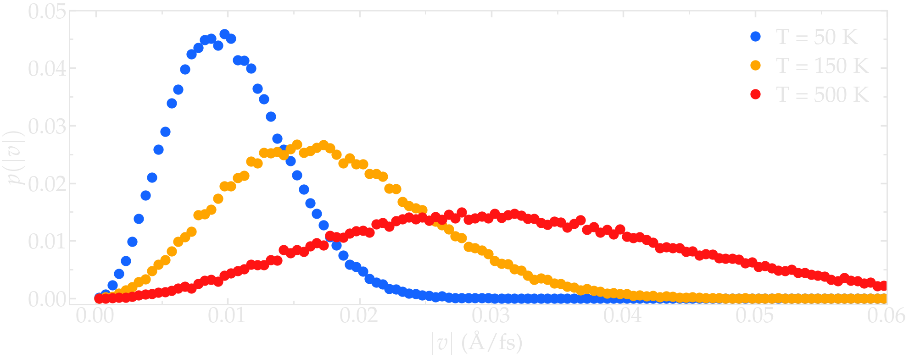
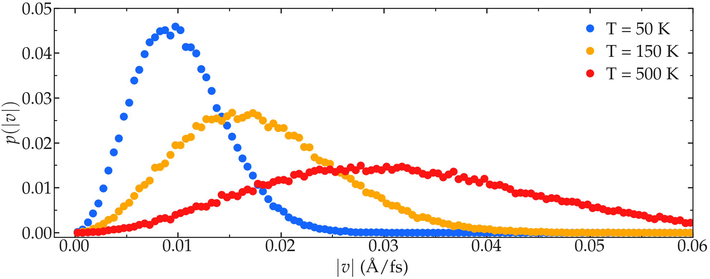

Initialize simulation#
The InitializeSimulation class deals with creating the simulation box, populating it with a chosen number of atoms with initial velocity. The InitializeSimulation class also takes care of converting the inputs units into non-dimensionalized.
The __init__ function#
Open a new blank .py file, call it main.py, and copy the following files in it:
import numpy as np
import warnings
warnings.filterwarnings('ignore')
The numpy functions will be used here, and some annoying warning are deactivated (will be useful when evaluating Metropolis criteria). Then, copy:
class InitializeSimulation:
def __init__(self,
number_atoms,
Lx,
dimensions=3,
Ly = None,
Lz = None,
epsilon=0.1,
sigma=1,
atom_mass=1,
seed=None,
desired_temperature=300,
desired_pressure=1)
self.number_atoms = number_atoms
self.Lx = Lx
self.Ly = Ly
self.Lz = Lz
self.dimensions = dimensions
self.epsilon = epsilon
self.sigma = sigma
self.atom_mass = atom_mass
self.seed = seed
self.desired_temperature = desired_temperature
self.desired_pressure = desired_pressure
Important variables are being defined within the __init__ function of the InitializeSimulation class. number_atoms is the desired initial number of atoms, Lx the box size along the x direction (or along all 3 directions if Ly and Lz are not provided, which is the default), dimensions is the number of dimensions of the system, epsilon the reference Lennard-Jones energy parameter in Kcal/mol, sigma the reference Lennard-Jones distance parameter in Angstrom, and atom_mass the reference mass in g/mol. The desired_temperature and desired_pressure parameters, respectively in Kelvin and in atmosphere, are optional parameters that will be used in some case (as will be seen later on), and seed offer the possibility to fix the seed of the randomly generated number, allowing for repeating the same simulation if necessary – this is usually useful during debugging.
Add the following lines to the __init__ function:
if self.seed is not None:
np.random.seed(self.seed)
Initialize box#
The initialize_box functions takes the inputs values for \(Lx\) (and optionally \(Ly\) and \(Lz\)) to create a cuboid box of dimensions \(Lx \times Ly \times Lz\), if \(Ly\) and \(Lz\) are provided, or \(Lx \times Lx \times Lx\), if \(Ly\) and \(Lz\) are not provided. For system with dimensions lower than 3, 2D or even 1D simulation boxes are created.
def initialize_box(self):
"""Define box boundaries based on Lx, Ly, and Lz.
If Ly or Lz or both are None, then Lx is used instead"""
box_boundaries = np.zeros((self.dimensions, 2))
for dim, L in zip(range(self.dimensions), [self.Lx, self.Ly, self.Lz]):
if L is not None:
box_boundaries[dim] = -L/2, L/2
else:
box_boundaries[dim] = -self.Lx/2, self.Lx/2
box_boundaries = self.nondimensionalise_units(box_boundaries, "distance")
self.box_boundaries = box_boundaries
Note that choosing a dimension different fom 3 may cause problem in other parts of the code, to be fixed.
Populate box#
The populate_box function add a number corresponding to number_atoms of atoms in the box at random positions.
def populate_box(self):
"""Place atoms at random positions within the box."""
atoms_positions = np.zeros((self.number_atoms, self.dimensions))
if self.provided_positions is not None:
atoms_positions = self.provided_positions/self.reference_distance
else:
for dim in np.arange(self.dimensions):
atoms_positions[:, dim] = np.random.random(self.number_atoms)*np.diff(self.box_boundaries[dim]) - np.diff(self.box_boundaries[dim])/2
self.atoms_positions = atoms_positions
More advanced version of the populate_box function could for instance ensure that no overlap exists between the atoms. For simplicity, we stick here with simple positioning of the atoms. Another more advanced alternative is to place the atoms on given lattice, like simple cubic lattice, which is useful for studying solids. Another common option is to restrain the placement of the atoms within a certain sub-region of the system.
Give initial velocity to the atoms#
Providing the atoms with an initial velocity is useful to reach the target temperature faster.
def give_velocity(self):
"""Give velocity to atoms so that the initial temperature is the desired one."""
atoms_velocities = np.zeros((self.number_atoms, self.dimensions))
if self.provided_velocities is not None:
atoms_velocities = self.provided_velocities/self.reference_distance*self.reference_time
else:
for dim in np.arange(self.dimensions):
atoms_velocities[:, dim] = np.random.normal(size=self.number_atoms)
self.atoms_velocities = atoms_velocities
self.calculate_temperature()
scale = np.sqrt(1+((self.desired_temperature/self.temperature)-1))
self.atoms_velocities *= scale
Commonly, one can make sure that no overall translational nor rotational momentum is given to the atoms.
The scale \(\sqrt{[ 1+((T_0/T-1) ]}\) is used to rescale the velocity of the atoms so that the temperature of the system goes from \(T\), the current temperature, to \(T_0\), the desired temperature.
Nondimensionalize the units#
Units are given by the user in the so-called real units as defined by LAMMPS, and are converted into non-dimensional units before the simulation starts. This is done thanks to the following function nondimensionalise_units, and is based on the references distance (\(\sigma\)), energy (\(\epsilon\)), and mass (\(m\)) as provided by default.
def nondimensionalise_units(self, variable, type):
kB = cst.Boltzmann*cst.Avogadro/cst.calorie/cst.kilo # kCal/mol/K
if variable is not None:
if type == "distance":
variable /= self.reference_distance
elif type == "energy":
variable /= self.reference_energy
elif type == "mass":
variable /= self.reference_mass
elif type == "temperature":
variable /= self.reference_energy/kB
elif type == "time":
variable /= self.reference_time
elif type == "pressure":
variable *= cst.atm*cst.angstrom**3*cst.Avogadro/cst.calorie/cst.kilo/self.reference_energy*self.reference_distance**3
else:
print("Unknown variable type", type)
return variable
Probe temperature#
The rescaling of the velocity requires to be able to calculate temperature. This is done using the formula \(T = 2 E_\text{kin} / N_\text{dof}\). Create the Utilities class, and two functions: calculate_kinetic_energy and calculate_temperature. The kinetic energy is simply calculated as \(E_\text{kin} = \sum_i 1/2 m v_i^2\), where \(v_i\) is the velocity of atom \(i\).
class Utilities:
def __init__(self,
*args,
**kwargs):
super().__init__(*args, **kwargs)
def calculate_kinetic_energy(self):
self.Ekin = np.sum(self.atom_mass*np.sum(self.atoms_velocities**2, axis=1)/2)
def calculate_temperature(self):
"""Follow the expression given in the LAMMPS documentation"""
self.calculate_kinetic_energy()
Ndof = self.dimensions*self.number_atoms-self.dimensions
self.temperature = 2*self.Ekin/Ndof
Save atom coordinate to file#
Since one would like to visualize the box that is being create, let us start to fill the Outputs class and crate our first function named write_lammps_data. write_lammps_data creates data file in a format that is readable by LAMMPS, as well as Ovito visualization software.
class Outputs:
def __init__(self,
*args,
**kwargs):
super().__init__(*args, **kwargs)
def write_lammps_data(self, filename="lammps.data"):
"""Write a LAMMPS data file containing atoms positions and velocities"""
f = open(filename, "w")
f.write('# LAMMPS data file \n\n')
f.write(str(self.number_atoms)+' atoms\n')
f.write('1 atom types\n')
f.write('\n')
for LminLmax, dim in zip(self.box_boundaries*self.reference_distance, ["x", "y", "z"]):
f.write(str(LminLmax[0])+' '+str(LminLmax[1])+' '+dim+'lo ' + dim + 'hi\n')
f.write('\n')
f.write('Atoms\n')
f.write('\n')
cpt = 1
for xyz in self.atoms_positions*self.reference_distance:
f.write(str(cpt)+ ' 1 ' + str(xyz[0]) + ' ' + str(xyz[1]) + ' ' + str(xyz[2]) +'\n')
cpt += 1
f.write('\n')
f.write('Velocities\n')
f.write('\n')
cpt = 1
for vxyz in self.atoms_velocities*self.reference_distance/self.reference_time:
f.write(str(cpt) + ' ' + str(vxyz[0]) + ' ' + str(vxyz[1]) + ' ' + str(vxyz[2]) +'\n')
cpt += 1
f.close()
Final code#
The currently written code is:
from scipy import constants as cst
import numpy as np
class InitializeSimulation:
def __init__(self,
number_atoms,
Lx,
dimensions=3,
Ly = None,
Lz = None,
epsilon=0.1,
sigma=1,
atom_mass=1,
seed=None,
desired_temperature=300,
desired_pressure=1,
provided_positions=None,
provided_velocities=None,
*args,
**kwargs,
):
super().__init__(*args, **kwargs)
self.number_atoms = number_atoms
self.Lx = Lx
self.Ly = Ly
self.Lz = Lz
self.dimensions = dimensions
self.epsilon = epsilon
self.sigma = sigma
self.atom_mass = atom_mass
self.seed = seed
self.desired_temperature = desired_temperature
self.desired_pressure = desired_pressure
self.provided_positions = provided_positions
self.provided_velocities = provided_velocities
if self.seed is not None:
np.random.seed(self.seed)
self.reference_distance = self.sigma
self.reference_energy = self.epsilon
self.reference_mass = self.atom_mass
self.reference_time = np.sqrt((self.reference_mass/cst.kilo/cst.Avogadro)*(self.reference_distance*cst.angstrom)**2/(self.reference_energy*cst.calorie*cst.kilo/cst.Avogadro))/cst.femto
self.Lx = self.nondimensionalise_units(self.Lx, "distance")
self.Ly = self.nondimensionalise_units(self.Ly, "distance")
self.Lz = self.nondimensionalise_units(self.Lz, "distance")
self.epsilon = self.nondimensionalise_units(self.epsilon, "energy")
self.sigma = self.nondimensionalise_units(self.sigma, "distance")
self.atom_mass = self.nondimensionalise_units(self.atom_mass, "mass")
self.desired_temperature = self.nondimensionalise_units(self.desired_temperature, "temperature")
self.desired_pressure = self.nondimensionalise_units(self.desired_pressure, "pressure")
self.initialize_box()
self.populate_box()
self.give_velocity()
self.write_lammps_data(filename="initial.data")
def nondimensionalise_units(self, variable, type):
kB = cst.Boltzmann*cst.Avogadro/cst.calorie/cst.kilo # kCal/mol/K
if variable is not None:
if type == "distance":
variable /= self.reference_distance
elif type == "energy":
variable /= self.reference_energy
elif type == "mass":
variable /= self.reference_mass
elif type == "temperature":
variable /= self.reference_energy/kB
elif type == "time":
variable /= self.reference_time
elif type == "pressure":
variable *= cst.atm*cst.angstrom**3*cst.Avogadro/cst.calorie/cst.kilo/self.reference_energy*self.reference_distance**3
else:
print("Unknown variable type", type)
return variable
def initialize_box(self):
"""Define box boundaries based on Lx, Ly, and Lz.
If Ly or Lz or both are None, then Lx is used instead"""
box_boundaries = np.zeros((self.dimensions, 2))
for dim, L in zip(range(self.dimensions), [self.Lx, self.Ly, self.Lz]):
if L is not None:
box_boundaries[dim] = -L/2, L/2
else:
box_boundaries[dim] = -self.Lx/2, self.Lx/2
box_boundaries = self.nondimensionalise_units(box_boundaries, "distance")
self.box_boundaries = box_boundaries
def populate_box(self):
"""Place atoms at random positions within the box."""
atoms_positions = np.zeros((self.number_atoms, self.dimensions))
if self.provided_positions is not None:
atoms_positions = self.provided_positions/self.reference_distance
else:
for dim in np.arange(self.dimensions):
atoms_positions[:, dim] = np.random.random(self.number_atoms)*np.diff(self.box_boundaries[dim]) - np.diff(self.box_boundaries[dim])/2
self.atoms_positions = atoms_positions
def give_velocity(self):
"""Give velocity to atoms so that the initial temperature is the desired one."""
atoms_velocities = np.zeros((self.number_atoms, self.dimensions))
if self.provided_velocities is not None:
atoms_velocities = self.provided_velocities/self.reference_distance*self.reference_time
else:
for dim in np.arange(self.dimensions):
atoms_velocities[:, dim] = np.random.normal(size=self.number_atoms)
self.atoms_velocities = atoms_velocities
self.calculate_temperature()
scale = np.sqrt(1+((self.desired_temperature/self.temperature)-1))
self.atoms_velocities *= scale
class Utilities:
def __init__(self,
*args,
**kwargs):
super().__init__(*args, **kwargs)
def calculate_kinetic_energy(self):
self.Ekin = np.sum(self.atom_mass*np.sum(self.atoms_velocities**2, axis=1)/2)
def calculate_temperature(self):
"""Follow the expression given in the LAMMPS documentation"""
self.calculate_kinetic_energy()
Ndof = self.dimensions*self.number_atoms-self.dimensions
self.temperature = 2*self.Ekin/Ndof
class Outputs:
def __init__(self,
*args,
**kwargs):
super().__init__(*args, **kwargs)
def write_lammps_data(self, filename="lammps.data"):
"""Write a LAMMPS data file containing atoms positions and velocities"""
f = open(filename, "w")
f.write('# LAMMPS data file \n\n')
f.write(str(self.number_atoms)+' atoms\n')
f.write('1 atom types\n')
f.write('\n')
for LminLmax, dim in zip(self.box_boundaries*self.reference_distance, ["x", "y", "z"]):
f.write(str(LminLmax[0])+' '+str(LminLmax[1])+' '+dim+'lo ' + dim + 'hi\n')
f.write('\n')
f.write('Atoms\n')
f.write('\n')
cpt = 1
for xyz in self.atoms_positions*self.reference_distance:
f.write(str(cpt)+ ' 1 ' + str(xyz[0]) + ' ' + str(xyz[1]) + ' ' + str(xyz[2]) +'\n')
cpt += 1
f.write('\n')
f.write('Velocities\n')
f.write('\n')
cpt = 1
for vxyz in self.atoms_velocities*self.reference_distance/self.reference_time:
f.write(str(cpt) + ' ' + str(vxyz[0]) + ' ' + str(vxyz[1]) + ' ' + str(vxyz[2]) +'\n')
cpt += 1
f.close()
class MolecularDynamics(InitializeSimulation, Utilities, Outputs):
def __init__(self,
*args,
**kwargs,
):
super().__init__(*args, **kwargs)
class MonteCarlo(InitializeSimulation, Utilities, Outputs):
def __init__(self,
*args,
**kwargs,
):
super().__init__(*args, **kwargs)
Tests#
Let us test the InitializeSimulation to make sure it does what we expect.
Initial position#
Let us create a small box of (2 nm)³ containing 30 particles. In a new python file, or in a Jupyter notebook, write:
from main import MolecularDynamics
import numpy as np
x = MolecularDynamics(number_atoms=30,
Lx=20,
seed=69817,
)
x.write_lammps_data()
After executing this script, a data file named atoms-positions.data has been created.
Velocity distribution#
Let us general a very large number of particle with a given temperature:
from main import MolecularDynamics
import numpy as np
temperature=500 # Kelvin
x = MolecularDynamics(number_atoms=50000,
Lx=12,
desired_temperature=temperature,
seed=69817,
)
x.write_lammps_data()
velocity = x.atoms_velocities*x.reference_distance/x.reference_time
norm_velocity = np.sqrt(velocity.T[0]**2 + velocity.T[1]**2 + velocity.T[2]**2)
Let us calculate a histogram from the norm of the velocity norm_velocity:
proba, vel = np.histogram(norm_velocity, bins=200, range=(0, 0.1))
vel = (vel[1:]+vel[:-1])/2
proba = proba/np.sum(proba)
Finally let us plot the distribution using matplotlib pyplot:
from matplotlib import pyplot as plt
plt.plot(vel, proba, 'o', color=color, markersize=15, label=r'T = '+str(temperature)+' K')
Using 3 different temperatures, and modifying slightly the default pyplot representation, here are the velocity distribution that we obtain:


Note that those initial distributions are usually considered as non important in molecular simulations, as they will quickly be over